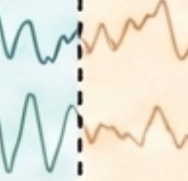
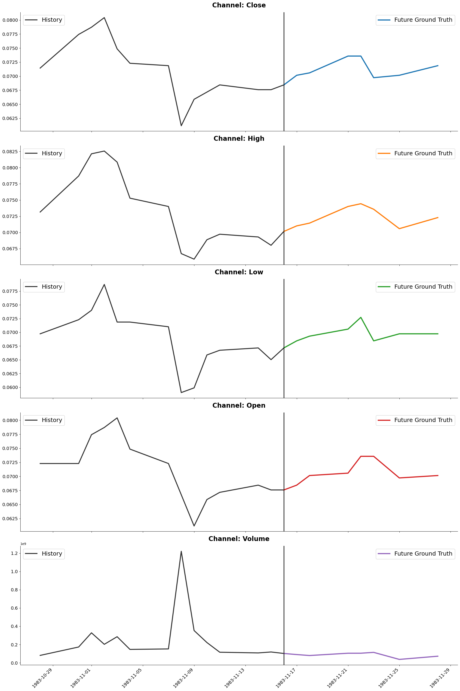

TFRBench :A Reasoning Benchmark for Evaluating Forecasting Systems
We introduce TFRBench, the first benchmark designed to evaluate the reasoning capabilities of forecasting systems. Traditionally, time-series forecasting has been evaluated solely on numerical accuracy, treating foundation models as “black boxes.” Unlike existing benchmarks, TFRBench provides a protocol for evaluating the reasoning generated by forecasting systems–specifically their analysis of cross-channel dependencies, trends, and external events. To enable this, we propose a systematic multi-agent framework that utilizes an iterative verification loop to synthesize numerically grounded reasoning traces. Spanning ten datasets across five domains, our evaluation confirms that this reasoning is causally effective; useful for evaluation; and prompting LLMs with our generated traces significantly improves forecasting accuracy compared to direct numerical prediction (e.g., avg. ∼ 40.2% → 56.6%), validating the quality of our reasoning. Conversely, benchmarking experiments reveal that off-theshelf LLMs consistently struggle with both reasoning (lower LLM-as-a-Judge scores) and numerical forecasting, frequently failing to capture domain-specific dynamics. TFRBench thus establishes a new standard for interpretable, reasoningbased evaluation in time-series forecasting.
Comprehensive evaluations across all datasets and reasoning metrics.
| Domain | Dataset | Source | Total Samples | Reference Samples | Freq. | Window (in-out) | Ch. | Series |
|---|---|---|---|---|---|---|---|---|
| Energy | Solar | GIFT-Eval | 274 | 193 | Daily | 96-96 | 1 | 137 |
| Electricity | GIFT-Eval | 1346 | 353 | Daily | 96-96 | 1 | 81 | |
| Sales | Car-parts | GIFT-Eval | 1037 | 692 | Monthly | 25-25 | 1 | 1037 |
| Hierarchical Sales | GIFT-Eval | 1370 | 1076 | Daily | 96-96 | 1 | 81 | |
| Web/CloudOps | Bitbrains Fast Storage | GIFT-Eval | 1153 | 678 | Hourly | 96-96 | 2 | 197 |
| Web Traffic | Monash archive | 1214 | 710 | Daily | 96-96 | 1 | 162 | |
| Transportation | Traffic | Autoformer et al. | 1104 | 449 | Hourly | 96-96 | 1 | 6 |
| NYC Taxi | nyc.gov | 1000 | 391 | Hourly | 96-96 | 1 | 1 | |
| Economics/Finance | Amazon pricing | Yahoo Finance/nasdaq | 512 | 328 | Daily | 14-7 | 5 | 1 |
| Apple pricing | Yahoo Finance/nasdaq | 809 | 509 | Daily | 14-7 | 5 | 1 |

[Close]:
[High]:
[Low]:
[Open]:
[Volume]:
@inproceedings{tfrbench,
title={TFRBench: A Reasoning Benchmark for Evaluating Forecasting Systems},
author={Md Atik Ahamed, Mihir Parmar, Palash Goyal, Yiwen Song, Long T. Le, Qiang Cheng, Chun-Liang Li, Hamid Palangi, Jinsung Yoon, Tomas Pfister},
booktitle={arXiv},
year={2026},
url={https://arxiv.org/pdf/#}
}